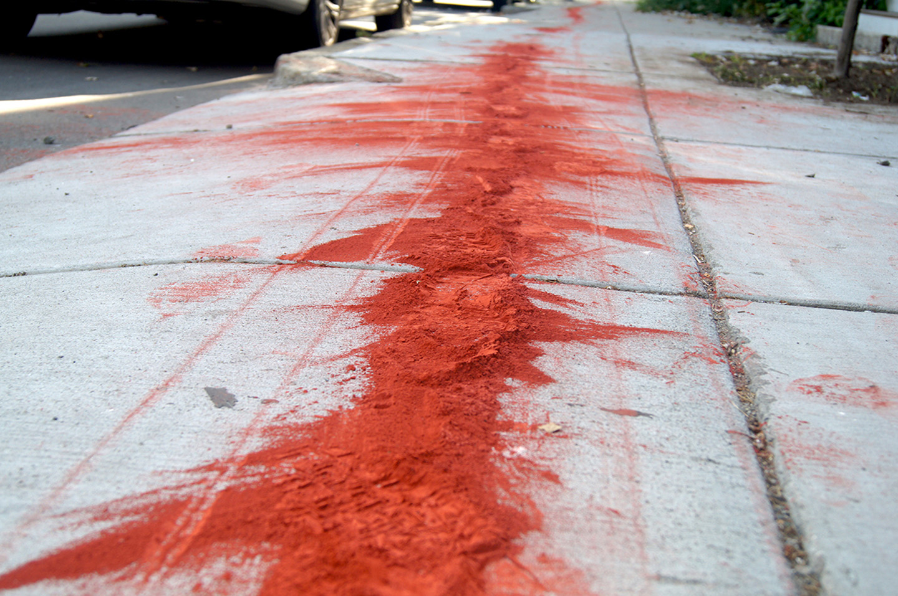
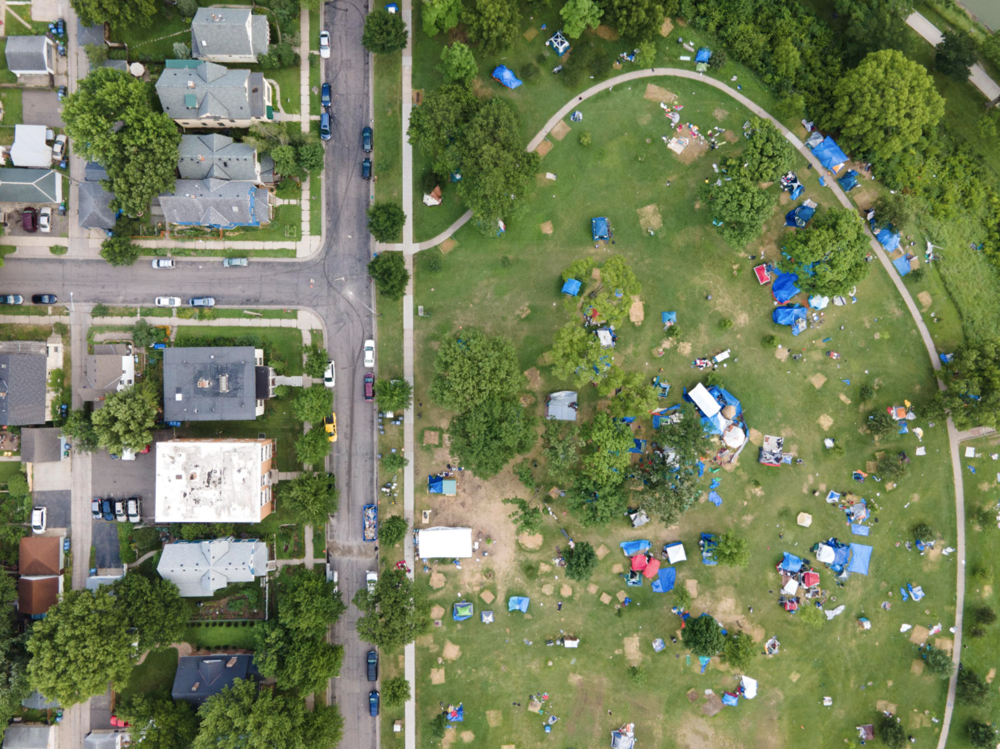
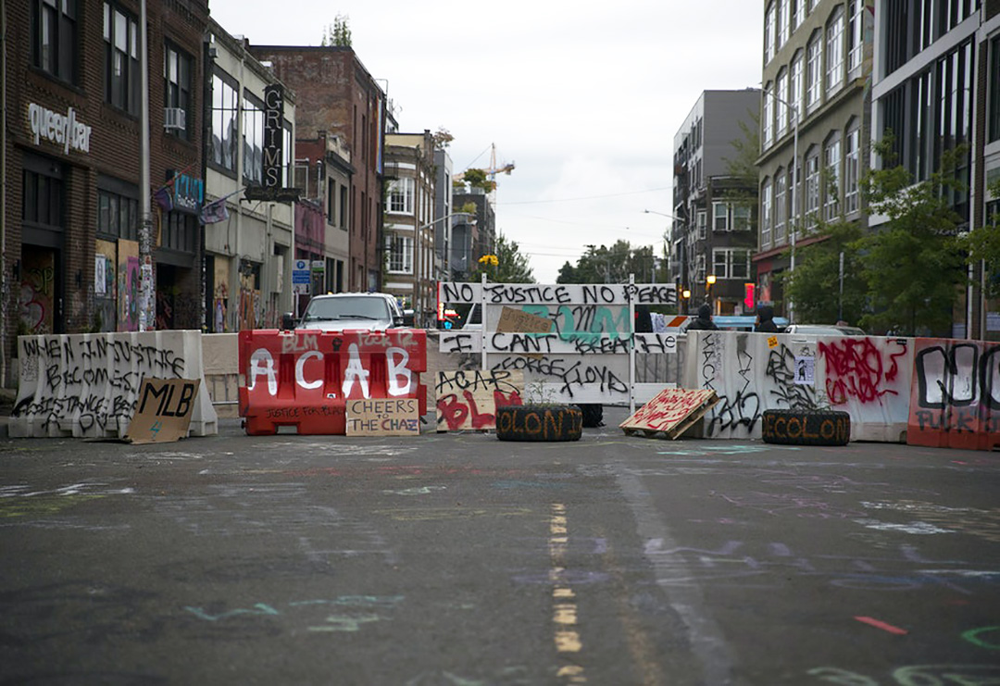
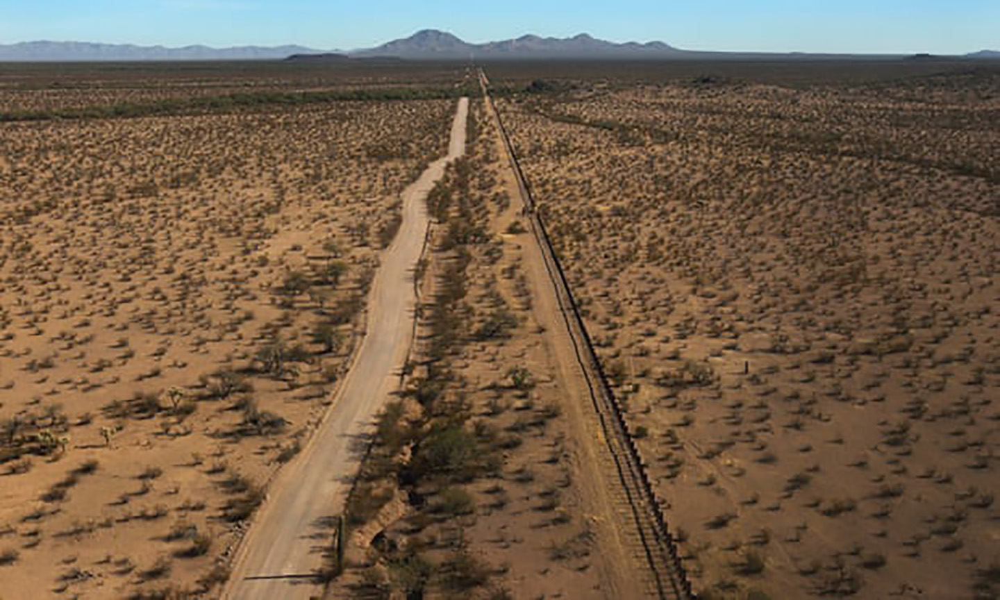

Jamaica Plain, Boston, MA, USA
Using bright red chalk, artists, activists, and other volunteers with City Life/Vida Urbana trace the "redline" along the Washington Avenue corridor. This simple red line visualized the policies that caused Jamaica Plain to exist today as the new epicenter of Boston's gentrification. On one side, families could engage in home ownership and the accumulation of wealth for future generations; on the other, families settled in dilapidated houses left behind by white flight. The precarious situation of JP residents continued with the planned Southwest Expressway, its cancellation, and the following redevelopment. JP remains trapped by powerful real estate and political interests. At the same time, this border landscape gave rise to a coalition of neighborhood activists, historic preservationists, urban environmentalists, transit advocates, and determined citizens elaborating on a history of organizing against foreclosures, gentrification, and redlining.
Photo credit: clvu.org

Minneapolis, MN, USA
Built up by the endemic and systemic racism of American cities, the designed architecture of exclusion in cities was brought to the forefront with unrest following George Floyd's murder in June 2020. Racially exclusive planning policies divide whites and Blacks. Highways dissect Black neighborhoods. These policies contribute to one of the highest discrepancies in poverty rates, home ownership, employment, and level of population between whites and non-whites in the country. A series of high-profile police shootings targeting unarmed Black men prove the fact that Minneappolis is structured for the wealthy white populaiton. The destruction accompanying the protests displaced many residents, forcing them to set up camps in the city parks, including the pictued Powderhorn Park and other open spaces. Many local businesses were affected and destroyed, creating a media spectacle that obscured the movement for racial justice.
Photo credit: unequalscenes.com



Capitol Hill Occupied Protest, Seattle, WA, USA
The CHOP rose up as an alternative society in response and to counter the brutality of the state by demanding the defunding of police, investing in local communities, and releasing protesters. Also, known as the Capitol Hill Organized Protest and as the Capitol Hill Autonomous Zone and directed by adaptive guidlines that were constantly updated, this ambiguous nature reflects the transitory experiences of these borderlands. The protest highlights the danger in combating marginalization through border-making. In trying to create a police-free neighborhood, violence continued to exist without resources to invest anti-poverty and community-building programs also partly due to the existing nature of Capitol Hill. Yet, CHOP was intended to be a temporary demonstration aided by some city officials and was able to suggest possibilities for another Seattle. Its experimental nature highlighted dangers to address in the dismantling of borders.
Photo credit: gettyimages.com



US-Mexico Border in Tohono Oʼodham Nation
A barbed wire fence and thick metal posts denoting a 62-mile international boundary cuts through the heart of the Tohono O'odham, creating a physical, ecological, and spiritual division. This border was first mapped by US diplomants who paid little attention to its inhabitants. As the US tightened its security procedures, smugglers turned to tribal lands, forcing the council to consider a vehicle barrier that would dig up sacred earth. In O'odham, as the people say, there is no word for "wall." This intrusion cuts off members living in Sonora from relatives and other members in Arizona–save for one unremarkable opening, which allows individuals to travel back and forth if they prove their right with a tribal ID. However, with each shift in immigration and border policy, tribal members, particularly those in Mexico, find it increasinly difficult to secure their rights.
Photo credit: usatoday.com

Conceived Borders: Intangibility in Tangibility
Considering the scales at which borders are constructed, from a wall of international lines to the pavement on the street, encourages an understanding for the shared conflicts and conditions between dwellers of different border landscapes. The aesthetic senses of these divisions are actively produced–directly or indirectly–through spatial outreach by the state. The tangibility of our borders expand into our social experiences. Inhabitants of the border are forced to live with the permanence and the transience of these spaces.